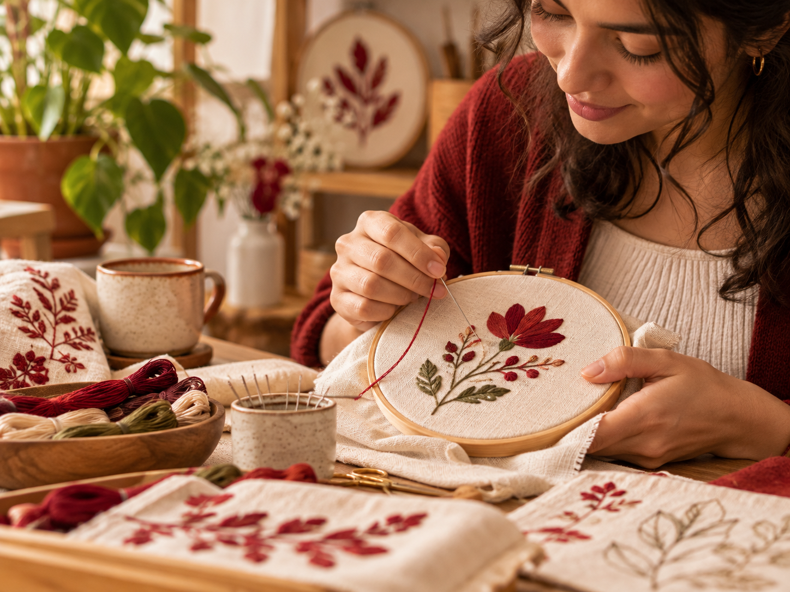
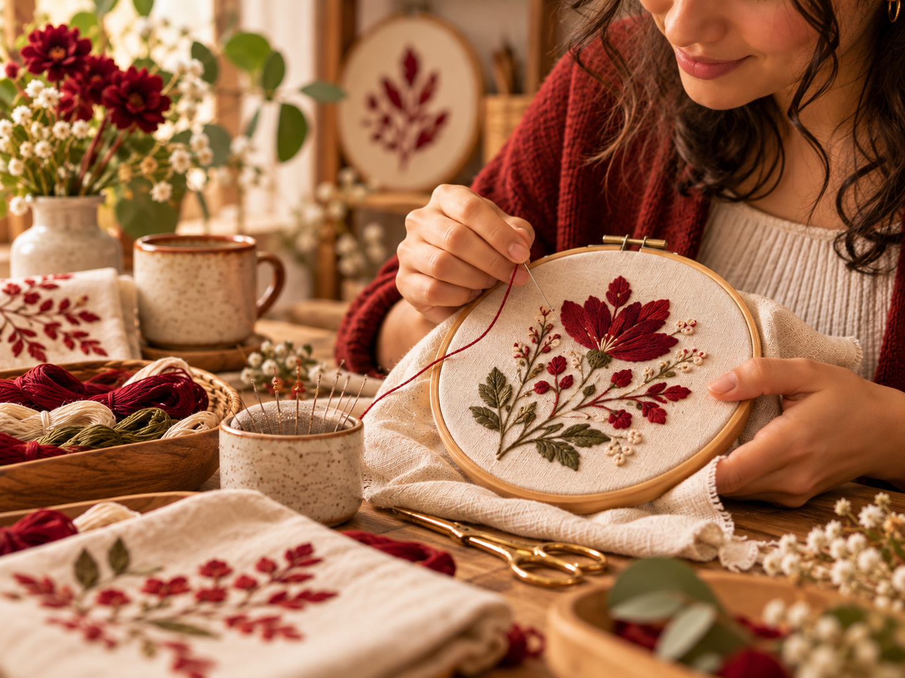
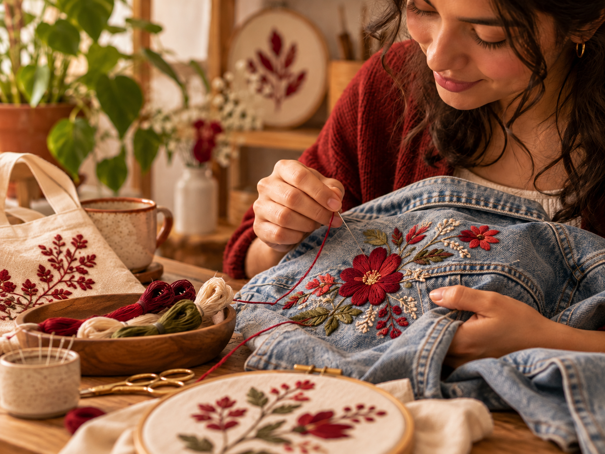
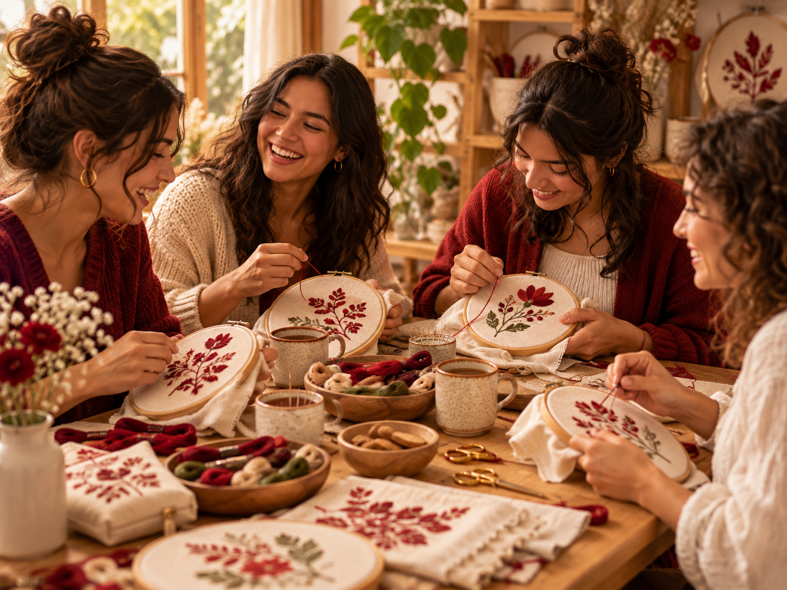
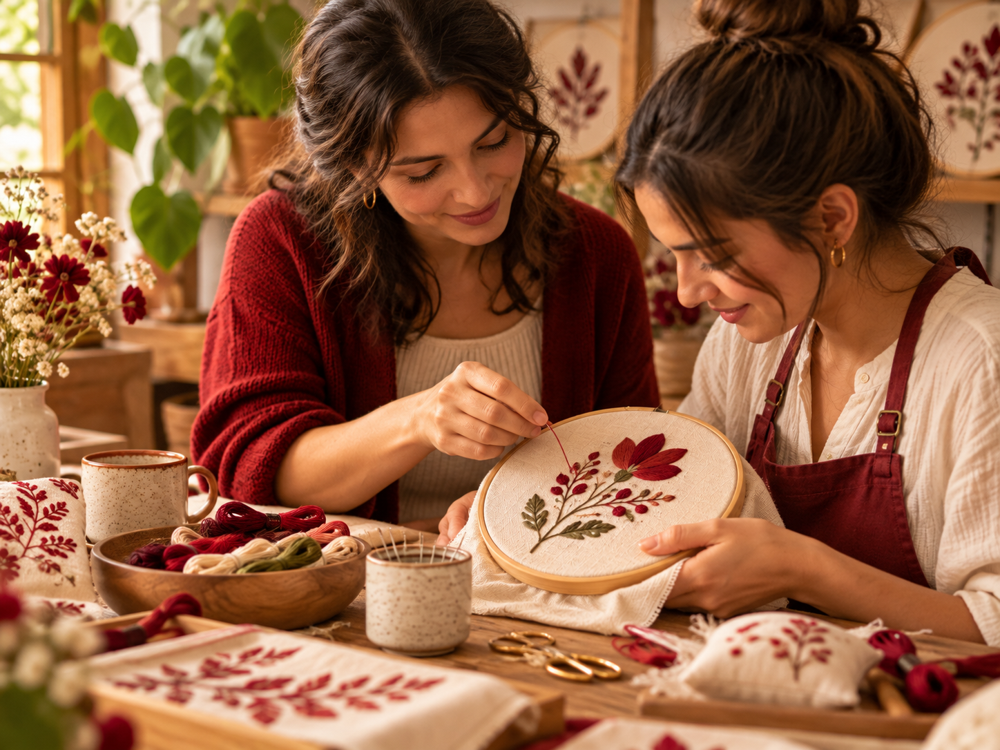
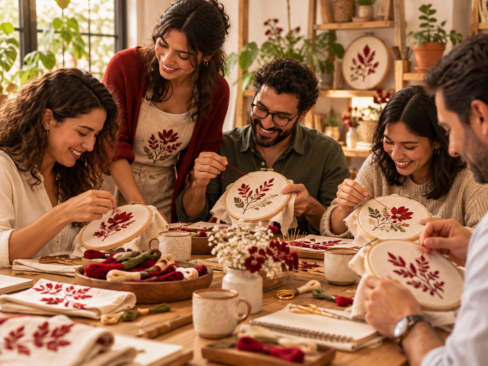

En La Rueca creemos en el valor de crear con nuestras propias manos. Un espacio para aprender, bordar, compartir y encontrarnos alrededor del hilo y la creatividad.
Conoce nuestros talleresLa Rueca es un espacio creativo en Medellín dedicado a los talleres de bordado y a las experiencias hechas a mano.
Creamos espacios para aprender, compartir y encontrarnos alrededor del hilo, la aguja y la creatividad.
Acompañamos a personas que quieren aprender bordado desde cero, desarrollar su creatividad o disfrutar una experiencia diferente.
Nos diferencia el valor que damos al proceso manual, al encuentro y a la creación de piezas únicas hechas con tiempo y dedicación.

Aprende las puntadas básicas y crea tu primera pieza bordada paso a paso.
Información por WhatsApp
Más información
Aprende a bordar flores y elementos inspirados en la naturaleza.
Información por WhatsApp
Más información
Transforma prendas y accesorios con diseños únicos hechos a mano.
Información por WhatsApp
Más información
Una experiencia para bordar, conversar, aprender y compartir en grupo.
Información por WhatsApp
Más información
Una experiencia personalizada de bordado para personas o grupos pequeños.
Información por WhatsApp
Más información
Actividades creativas para equipos, empresas, eventos y encuentros especiales.
Información por WhatsApp
Más informaciónNo necesitas experiencia previa. Te acompañamos paso a paso para que aprendas las técnicas básicas del bordado.
Cada taller es una oportunidad para desarrollar tu creatividad y crear una pieza única hecha por ti.
Compartimos un espacio tranquilo para aprender, conversar y encontrarnos alrededor del bordado.
| Taller | Nivel | Modalidad | Duración |
|---|---|---|---|
| Bordado para principiantes | Inicial | Presencial | 3 horas |
| Bordado floral | Inicial | Presencial | 3 horas |
| Personalización de prendas | Intermedio | Presencial | 4 horas |
| Encuentro creativo | Todos | Presencial | 3 horas |
| Taller privado | Todos | Presencial | A convenir |